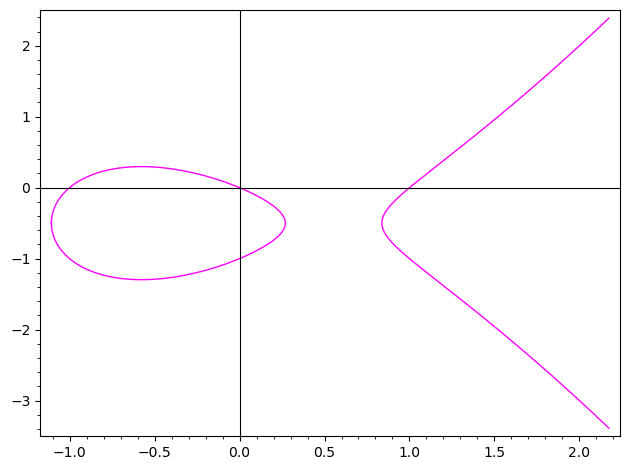
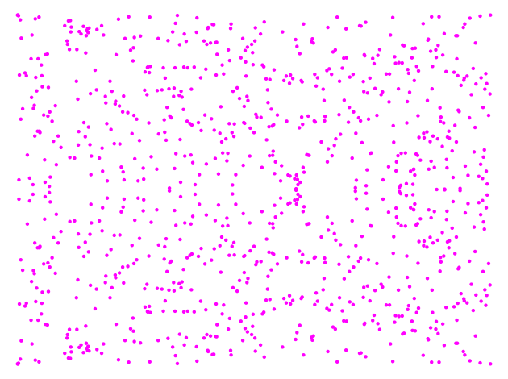
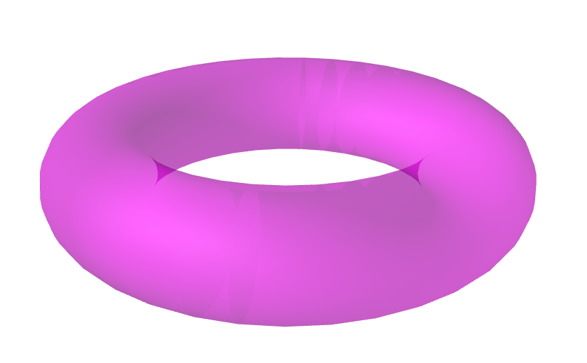

Zeta functions and the Weil conjectures
Why bother learning about Schemes? This is an important question to ask yourself before battling Hartshorne and Vakil. There are several answers to this question, each one depending on your own interests and mathematical inclinations. Understanding (the statement, and then the proof of) the Weil conjectures is one of my own answers.
In this note I will talk about the Weil conjectures, and sketch a proof of the baby case of zero dimensional varieties (this is Exercise 3.1 in Poonen's notes Curves.pdf). I use the language of schemes, but mastering scheme theory is not necessary to understand the spirit of this note. Learn about the spectrum of a ring and the Zariski topology (Chapter 1 of Atiyah-MacDonald has great exercises) and come back; you will be able to calculate zeta functions of interesting rings!
Of course, all errors (mathematical and literary) are my fault. Please email me with your suggestions and corrections.
References
This expository note is based on several wonderful references that I cite bellow. If you liked this post, you will love the following:
- Oort, Frans. The Weil conjectures. NAW 5/15 nr. 3 September, 2014.
- Poonen, Bjorn. "Lectures on rational points on curves." University of California, Berkeley (2006).
- Poonen, Bjorn. Rational points on varieties. Vol. 186. American Mathematical Soc., 2017.
- Serre, Jean-Pierre. "Zeta and L functions." Arithmetical Algebraic Geometry, Proc. of a Conference held at Purdue Univ., Dec. 5-7, 1963. Harper and Row, 1965.
The zeta function
Let \(X\) be a scheme of finite type over \(\mathbf{Z}\). For every closed point \(P \in X\), the residue field
\begin{equation} \kappa(P) := \mathcal{O}_P/\mathfrak{m}_P \end{equation}is a finite field.
To see why this is the case, choose an affine open neighborhood \(\mathrm{Spec} \, A\) of \(P\) such that the corresponding ring map \(\mathbf{Z} \to A\) gives \(A\) the structure of a finitely generated abelian group. After composing with the natural projection \(A \to A/P \cong \kappa(P)\), we get a map \(\varphi: \mathbf{Z} \to \kappa(P)\). Consider the kernel of this homomorphism:
- If \(\varphi\) is injective, then \(\mathbf{Z} \subset \mathbf{Q} \subseteq \kappa(P)\). Since \(\kappa(P)\) is of finite type over both \(\mathbf{Z}\) and \(\mathbf{Q}\), the Artin-Tate lemma would imply that the rational numbers are a finitely generated abelian group; a contradiction.
- Let \(k := \mathbf{Z}/\ker{\varphi}\). Since \(\kappa(P)\) is finitely generated as a \(k\)-algebra, Hilbert's Nullstellensatz tells us that \(\kappa(P)\) is also finitely generated as a \(k\)-vector space. Since \(k\) is a finite field, we conclude that \(\kappa(P)\) is also a finite field.
We define the norm of a closed point \(P \in X\) to be the size of it's residue field:
\begin{equation} NP : = \# \kappa(P). \end{equation}The zeta function of \(X\) is defined as
\begin{equation} \zeta(X,s) := \zeta_X(s) := \prod_P \left( 1 - NP^{-s} \right)^{-1}, \end{equation}where the product ranges over all closed points \(P\) in \(X\) and \(s\) denotes a complex variable. The interested reader can check that this possibly infinite (but always countable) product converges when the real part of \(s\) is strictly greater than the dimension of \(X\).
Before looking at some enlightening examples, we deduce two important properties from the definition.
Two properties
Denote by \(\overline{X}\) the set of closed points of \(X\). It is clear from the definition that \(\zeta_X(s)\) depends only on \(\overline{X}\).
Recall that when \(X\) is a variety over a field \(k\), we have that the set of closed points \(\bar{X}\) corresponds to the absolute Galois group \(G_k := \mathrm{Gal}(\bar{k}/k)\)-orbits of \(X(\bar{k})\).
- ( Property 1 ) If \(X_{\text{red}}\) is the reduction of \(X\), then \(\zeta(X_{\text{red}}, s) = \zeta(X,s)\).
- ( Property 2 ) Suppose we can write the set of closed points as a disjoint union \(\overline{X} = \bigsqcup_i \overline{X}_i\) of the set of closed points of some subschemes \(X_i\). Then \(\zeta(X, s) = \prod_i \zeta(X_i, s)\).
Property 1 follows from the fact that a scheme and its reduction have the same set of closed points. Property 2 follows directly from the definition of the zeta function as a product.
Some examples
- Let \(X = \mathrm{Spec} \, \mathbf{F}_{q^n}\) be the spectrum of a finite field. Since we have a unique closed point of norm \(q^n\), we have that
- When \(X = \mathrm{Spec} \, \mathbf{Z}\), the zeta function \(\zeta_X(s)\) is the Riemann zeta fucntion. Indeed, since \(\overline{X} = \bigsqcup_p \overline{ \mathrm{Spec} \, \mathbf{F}_{p}}\), Property 2 yields
- More generally, if \(X\) is the spectrum of the ring of integers of a number field, then \(\zeta(X,s)\) is the Dedekind zeta function.
- When \(X = \mathbf{A}^1_{\mathbf{F}_q} = \mathrm{Spec} \, \mathbf{F}_{q}[t]\) is the affine line over \(\mathbf{F}_{q}\), the closed points are in bijective correspondence with the monic irreducible polynomials in \(\mathbf{F}_{q}[t]\). Using the fact that this ring is a unique factorization domain (and justifying uniform convergence), we can rewrite
- When \(X = \mathbf{P}^1_{\mathbf{F}_q} = \mathrm{Proj} \, \mathbf{F}_{q}[t]\) is the projective line over \(\mathbf{F}_{q}\), writing \(\mathbf{P}^1_{\mathbf{F}_q} = \mathbf{A}^1_{\mathbf{F}_q} \sqcup \infty\), we have
Varieties over finite fields
A variety over a field \(k\) is a separated scheme of finite type over \(k\). Given a prime power \(q\), we will consider varieties over the finite field \(k = \mathbf{F}_q\). From this point forward, \(X\) will denote a variety over \( k\).
The first observation is that varieties over finite fields are of finite type over \(\mathbf{Z}\). This follows from the fact that the morphism \(\mathrm{Spec} \, \mathbf{F}_q \to \mathrm{Spec} \, \mathbf{Z}\) is of finite type, and the composition of morphisms of finite type is also of finite type.
The second observation is that for every closed point \(P\) in \(X\), the norm of \(P\) is of the form \(NP = q^{\deg(P)}\), where the degree of a point is \(\deg(P) := [\kappa(P): k]\). Thus, it makes sense to rewrite the zeta function in terms of the variable \(T := q^{-s}\).
\begin{equation} \label{eq:zeta} Z(X, T) := \prod_P \left( 1 - T^{\deg P}\right)^{-1}. \end{equation}Let \(X\) be a variety over \(\mathbf{F}_q\). Then, \(Z(X, 0) = 1\) and
\begin{equation} \label{eq:exponential} Z(X,T) = \exp \left( \sum_{r=1}^\infty \# X(\mathbf{F}_{q^r})\dfrac{T^r}{r} \right) . \end{equation}First, denote by \(N_d\) the number of closed points \(P \in X(\bar{\mathbf{F}}_q)\) of degree \(\deg P = d\). We can rewrite Equation \((\ref{eq:zeta})\) as
\begin{equation} \label{eq:Nd} Z(X,T) = \prod_{d = 1}^\infty \left(1-T^{d}\right)^{-N_d}. \end{equation}Recalling that a closed point of degree \(d\) is the same thing as size \(d\) orbit the absolute Galois group of \(\mathbf{F}_q\) acting on \(X(\bar{\mathbf{F}}_q)\), we see that \(X(\mathbf{F}_{q^r})\) is the disjoint union of all orbits of size \(d\), over all \(d | r\), and we get \[ \#X(\mathbf{F}_{q^r}) = \sum_{d|r} d\cdot N_d . \] Plugging this into the logarithm of the right-hand-side of Equation \((\ref{eq:exponential})\), we get
\begin{align*} \sum_{r=1}^\infty \# X(\mathbf{F}_{q^r}) \dfrac{T^r}{r} =& \, \sum_{r=1}^\infty \left(\sum_{d|r}\dfrac{d\cdot N_d}{r}\right)T^r \\ =& \, \sum_{d=1} N_d \sum_{m=1}^\infty \dfrac{T^{dm}}{m} \\ =& \, \sum_{d=1} -N_d \log (1-T^d) = \log \prod_{d=1}^\infty \left(1-T^d\right)^{-N_d}, \end{align*}and the result follows from Equation \((\ref{eq:Nd})\).
Projective space
Let's compute the zeta function of higher-dimensional projective space using point counts. We know that for every positive integer \(r\), we can describe the \(\mathbf{F}_{q^r}\)-points of projective space as lines through the origin on a \((n+1)\)-dimensional vector space over \(k\), so that \( \mathbf{P}^n_{k}(\mathbf{F}_{q^r}) \cong (\mathbf{F}_{q^r}^{n+1}-\{\vec{0}\})/\mathbf{F}_{q^r}^\times \) so that \[\# \mathbf{P}^n_{k}(\mathbf{F}_{q^r}) = \frac{(q^{r})^{n+1} - 1}{q^r - 1 } = 1 + q^r + q^{2r} + \cdots + q^{rn}. \] Plugging in this point-count into the Exponential form of the zeta function we obtain
\begin{equation} Z(\mathbf{P}^n_k, T ) = \dfrac{1}{(1-T)\cdots (1-q^nT)}. \end{equation}Zero dimensional varieties
A locally noetherian scheme of dimension 0 is a disjoint union of spectra of Artinian local rings (see this lemma). In particular, zero dimensional varieties over \(k\) are a finite disjoint union of local Artinian \(k\)-algebras. For example,
\begin{equation} X = \mathrm{Spec} \, \mathbf{F}_2[t]/(t^2), \end{equation}is a (non-reduced) zero-dimensional \(\mathbf{F}_2\)-variety. By Property 1, to calculate the zeta function of \(X\) we only need to consider the reduction \(X_{\mathrm{red}} = \mathrm{Spec} \, \mathbf{F}_2\).
Let \(X = \mathrm{Spec} \, \mathbf{F}_{q^d}\) as a \(k\)-scheme. Then, for every positive integer \(r\)
\begin{equation} \label{eq:points-points} \# X(\mathrm{Spec} \, \mathbf{F}_{q^r}) = \begin{cases} d, & \text{ if } d | r, \\ 0, & \text{ otherwise}. \end{cases} \end{equation}We have that \[ X(\mathbf{F}_{q^r}) := \mathrm{Mor}_{k}(\mathrm{Spec} \, \mathbf{F}_{q^r}, \mathrm{Spec} \, \mathbf{F}_{q^d}) = \mathrm{Hom}_k( \mathbf{F}_{q^d}, \mathbf{F}_{q^r}) . \] From the theory of finite fields, we know that \(\mathbf{F}_{q^d}\) embedds into \(\mathbf{F}_{q^r}\) if and only if \(d\) divides \(r\). Furthermore, given one such embedding, we can obtain all the others by composition with the elements of \(\mathrm{Gal}(\mathbf{F}_{q^d}/\mathbf{F}_{q})\); a cyclic group of order \(d\).
Plugging in this point-count into the Exponential form of the zeta function we obtain
\begin{equation} Z(\mathrm{Spec} \, \mathbf{F}_{q^d}, T ) = \dfrac{1}{1-T^d}. \end{equation}The Weil conjectures
You might have noticed that in all of our examples of varieties over finite fields, the zeta function turns out to be a rational function with rational coefficients. This is the first of four remarkable conjectures proposed by André Weil.
Let \(X\) be a variety over \(\mathbf{F}_q\).
(Rationality) \(Z_X(T)\) is the Taylor series of a rational function
\begin{equation*} \dfrac{(1-\beta_1T)\cdots(1-\beta_sT)}{(1-\alpha_1T)\cdots(1-\alpha_rT)} \in \mathbf{Q}(T). \end{equation*}(Riemann hypothesis) If \(X\) is smooth and projective of dimension \(d\), then
\begin{equation*} Z_X(T) = \dfrac{P_1(T)P_3(T)\cdots P_{2d-1}(T)}{P_0(T)P_2(T)\cdots P_{2d}(T)}, \end{equation*}where each \(P_i(T) \in 1 + T\mathbf{Z}[T]\) factors over \(\mathbf{C}\) as
\begin{equation*} P_i(T) = \prod_{j = 1}^{b_i}(1-\alpha_{ij}T), \end{equation*}and the roots satisfy \(|\alpha_{ij}| = q^{i/2}\).
(Functional equation) In addition, for \(X\) smooth and projective of dimension \(d\)
\begin{equation} Z_X\left(\frac{1}{q^dT}\right) = \pm q^{d\chi/2}T^\chi Z_X(T) , \end{equation}where \(\chi = b_0 - b_1 + b_2 - \cdots + b_{2d}\) is the Euler characteristic of \(X\). If \(X\) is geometrically irreducible, then \(P_0(T) = (1-T)\) and \(P_{2d}(T) = 1 - q^dT\).
(Singular Cohomology) Suppose \(K\) is a number field. Fix an embedding \(K \hookrightarrow \mathbf{C}\). Let \(X\) be a smooth projective variety of dimension \(d\) over \(K\). Let \(\mathfrak{p}\) be a prime of \(K\) for which \(X\) has good reduction. Then, each \(b_i = b_i(X_\mathfrak{p})\) equals the rank of the singular cohomology group \(H^i(X(\mathbf{C}), \mathbf{Z})\).
The connection with singular cohomology is especially surprising; it hints a relation between the topology of complex manifolds and the number of solutions to polynomial equations over finite fields. For example, if \(X\) is a nice genus \(g\) curve defined over the rationals, the set \(X(\mathbf{C})\) of complex points is a compact Riemann surface (a donut with \(g\) holes) whose Betti numbers are
\begin{align} h^0(X(\mathbf{C}), \mathbf{Z}) = 1, \quad h^1(X(\mathbf{C}), \mathbf{Z}) = 2g, \quad h^2(X(\mathbf{C}), \mathbf{Z}) = 1. \notag \end{align}Furthermore, if \(p\) is a prime of good reduction (reducing the coefficients of the equation defining \(X\) \(\mathrm{mod} \, p\) gives a nice curve \(X_p\) defined over \(\mathbf{F}_p\)), then we have that
\begin{equation*} Z(X_p, T) = \dfrac{P_1(X_p, T)}{(1-T)(1-pT)}, \end{equation*}where
\begin{align} \deg (1-T) = 1, \quad \deg P_1(X_p, T) = 2g, \quad \deg (1-pT) = 1. \notag \end{align}Taking the elliptic curve (genus \(g=1\)) \(E\) with affine equation \(y^2 + y = x^3 - x\), LMFDB label 37.a1, and discriminant \(37\). We can use SageMath to plot the real points as follows:
1: E = EllipticCurve(QQ, [0,0,1,-1,0]) 2: E.plot(color='magenta', frame=True)

Reducing modulo the prime \(1013\) we get the elliptic curve \(y^2 + y = x^3 + 1012x\). We plot the set of solutions in \(\mathbf{F}_{1013}\) (and count them) as follows:
1: E_1013 = EllipticCurve(GF(1013), [0,0,1,-1,0]) 2: E_1013.cardinality() 3: E_1013.plot(color='magenta', axes=False, frame=True)

The Weil conjectures tell us that this graph (or more precisely the sequence \(\#E(\mathbf{F}_{1013^n})\) for \(n = 1, 2, 3, \dots\)) somehow knows that the complex points of the elliptic curve \(E(\mathbf{C})\) form a torus.
1: from sage.plot.plot3d.shapes import Torus 2: Torus(1, .3, color='magenta', opacity=.4, frame=False)

Brief history of the proof
F.K. Schmidt proved these statements for curves, except for the Riemann hypothesis, which was proved by Helmut Hasse in the case of elliptic curves and by André Weil for general curves. Weil also proved his conjectures in the case of abelian varieties.
Weil secretly proposed an explanation based on the Lefschetz fixed-point theorem. If \(M\) is a \(d\)-dimensional compact real manifold, and \(f: M\to M\) is a reasonable map, then the induced maps on singular cohomology \(f^*\colon H^i(M,\mathbf{Q}) \to H^i(M,\mathbf{Q})\) satisfy
\begin{equation} \# \, \text{of fixed points of } f = \sum_{i=0}^d (-1)^i \mathrm{Tr}\left( f^*|_{H^i(M,\mathbf{Q})}\right). \end{equation}For a variety \(X\) defined over \(k = \mathbf{F}_q\), we have the \(q\)-relative Frobenius \(F: X\to X\). The number \(\# X(\mathbf{F}_{q^n})\) equals the number of fixed points of the \(n\)-th iteration \(F^n\) of the Frobenius endomorphism. This led Weil to suspect that \(\#X(\mathbf{F}_{q^n})\) should be computable as a similar alternating sum of the trace of \(F^n\) acting on some conjectural cohomology groups that would act like singular cohomology, but defined also for algebraic varieties in positive characteristic. (I read somewhere (don't remember where) that Weil predicted the Betti numbers of complex Grassmannians using his conjectures, before topologists could calculate them!)
The Rationality part of the conjectures was proved by Bernard Dwork using \(p\)-adic methods.
Finally, étale cohomology was developed by Michael Artin, Alexander Grothendieck and others to serve as the conjectural cohomology theory that Weil was looking for. In particular, they proved the Grothendieck-Lefschetz trace formula
\begin{equation} \# X(\mathbf{F}_{q}) = \sum_{i=0}^d (-1)^i \mathrm{Tr}\left( F^*|_{H_{et}^i(\bar{X},\mathbf{Q}_\ell)}\right), \end{equation}which allowed them to prove all the conjectures except for the Riemann hypothesis.
The Riemann hypothesis part was famously proved by Pierre Deligne, again using étale cohomology. To find references, take a look at the bibliography in Oort's article celebrating Deligne's Abel Prize.
A proof in dimension 0
As we discussed in the section above, it is enough to prove the conjectures for a point \(X = \mathrm{Spec}\, \mathbf{F}_{q^d}\), as an \(\mathbf{F_q}\)-variety. Note that \(X\) is smooth, projective, and irreducible (but not geometrically irreducible). We know that \(Z(X, T) = P_0(T)^{-1} = (1-T^d)^{-1}\) and the Rationality is clear. The polynomial \(P_0(T)\) factors over the complex numbers as
\begin{equation*} P_0(T) = \prod_{j=0}^d (1 - \zeta^j T), \quad \alpha_{0,j} := \zeta^j, \end{equation*}where \(\zeta\) is some primitive \(d\)-th root of unity. We have that \(\chi = b_0 = d\) and the roots satisfy \(|\alpha_{0,j}| = q^{0/2} = 1\) for every \(j\), so \(X\) also satisfies the Riemann hypothesis. The Functional equation is checked directly:
\begin{align*} Z(X, 1/T) = \dfrac{1}{1 - T^{-d}} = \dfrac{T^d}{T^d-1} =-T^d Z(X,T) . \end{align*}To verify the Singular cohomology part if the conjectures, let \(K\supseteq \mathbf{Q}\) be an algebraic number field, and let \(X\) be a smooth projective variety of dimension zero over \(K\). Thus, \(X = \mathrm{Spec} \, L\) where \(L \supseteq K\) is a finite field extension, say of degree \(n\).
Let \(R\) be an integral domain with field of fractions \(K\). Let \(X\) be a \(K\)-scheme. An \(R\)-model for \(X\) is an \(R\)-scheme \(\mathsf{X}\) equiped with a \(K\)-isomorphism \(\mathsf{X}\times_R K \cong X\).
Let \(R\) be an Dedekind domain with field of fractions \(K\). Let \(\mathfrak{p}\) be a prime of \(K\). A smooth proper \(K\)-variety \(X\) has good reduction at \(\mathfrak{p}\), if \(X\) admits a smooth proper \(R_{\mathfrak{p}}\)-model. We say that \(X\) has good reduction if it has good reduction at every prime.
We note that \(X = \mathrm{Spec} \, L\) has good reduction for the primes of \(K\) that are unramified on \(L\). Indeed, since \(L\supseteq K\) is a finite extension, we see that \(X \to \mathrm{Spec} \, K\) is smooth and proper. For any prime unramified prime \(\mathfrak{p}\) of \(K\), consider the \(\mathcal{O}_{K,\mathfrak{p}}\)-scheme \(\mathsf{X} := \mathrm{Spec} \, \mathcal{O}_{L,\mathfrak{p}}\). The morphism \(\mathsf{X} \to \mathrm{Spec} \, \mathcal{O}_{K,\mathfrak{p}}\) proper since its given by an integral extension of rings. The fact that \(\mathfrak{p}\) is unramified implies that it is also smooth (of relative dimension zero), via the Dedekind-Kummer theorem. Furthermore, since
\begin{equation*} \mathcal{O}_{L,\mathfrak{p}} \otimes_{\mathcal{O}_{K,\mathfrak{p}}} K \cong \left( \mathcal{O}_{L} \otimes_{\mathcal{O}_{K}} K \right)_{\mathfrak{p}} \cong L_\mathfrak{p} = L, \end{equation*}we have that \(\mathsf{X}\) is an \(\mathcal{O}_{K,\mathfrak{p}}\)-model of \(X\).
One the topology side, we have that the complex points \(X(\mathbf{C})\) are in bijective correspondence with the finite set of embeddings \(\mathrm{Hom}_K(L, \mathbf{C})\). In particular, \(X(\mathbf{C})\) has \(n = [L:K]\) elements, and
\begin{equation} h^0(X(\mathbf{C}), \mathbf{Z}) = n. \end{equation}On the arithmetic side, we have that \(X_\mathfrak{p} = \mathrm{Spec} \, \mathcal{O}_L/\mathfrak{p}\mathcal{O}_L\) is the special fiber of \(\mathsf{X} = \mathrm{Spec} \, \mathcal{O}_{L,\mathfrak{p}} \to \mathrm{Spec} \, \mathcal{O}_{K,\mathfrak{p}}\). Looking at the factorization \(\mathfrak{p}\mathcal{O}_L = \mathfrak{q}_1\dots \mathfrak{q}_g\), we see that \(X_\mathfrak{p}\) is a disjoint union of \(g\) points, corresponding to the finite fields \(\mathcal{O}_L/\mathfrak{q}_i\), which are degree \(f_i\) extensions of \(\mathcal{O}_K/\mathfrak{p}\). The fundamental identity from algebraic number theory implies that
\begin{equation} \deg P_0(X_\mathfrak{p},T) = f_1 + \cdots + f_g = n . \end{equation}